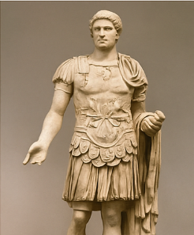

1. Il dipinto che mi ha colpito di più

Un'opera d'arte affascinante vista nella galleria principale.
Questo dipinto mi ha catturato per i suoi colori intensi e per l'espressione del personaggio raffigurato. È come se raccontasse una storia senza parole.
2. Un'antica scultura

Scultura romana in marmo esposta nella sala archeologia.
La scultura era alta quasi due metri e mostrava un antico guerriero romano. I dettagli del viso e dell'armatura erano incredibilmente realistici
Le cose che ho inparato oggi
- Le statue romane venivano spesso dipinte a colori vivaci
- Molti dipinti nascondono simpboli e significati nascosti
- ogni opera ha una storia unica